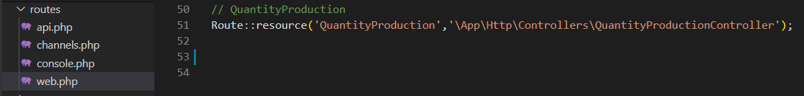

Features
CRUD adalah singkatan dari create, read, update, and delete. Keempat istilah tersebut merupakan fungsi utama yang nantinya diimplementasikan ke dalam database melalui form. Ketika user mengisi form, data dalam form tersebut akan di proses oleh Controller dan dikirimkan ke database serta ditampilkan kembali di View.
# Route
Buat route pada file web.php yang berada di routes>web.php agar kita dapat mengakses halaman view. QuantityProduction menunjukan nama url untuk kita akses, dan \App\Http\Controllers\QuantityProductionController adalah Controller.
# Database
Buat database secara manual di phpMyAdmin. Nama database yang digunakan adalah futami_db dengan nama table tbl_quantity_production. Jangan lupa membuat id_quantity_production sebagai primary key dan Auto Increment.
# Function index()
Variabel $data_quantityProduction mengambil data yang ada pada table tbl_quantity_production. Yang mana data tersebut akan di-return pada halaman index dalam folder QuantityProduction. Fungsi index() akan dieksekusi apabila kita mengakses halaman index melalui url. http://127.0.0.1:8000/QuantityProduction/
# Function create()
Function create() dijalankan saat kita mengakses url http://127.0.0.1:8000/QuantityProduction/create. Dalam potongan kode diatas, function create() akan me-return sebuah view, yaitu file create yang berada pada folder QuantityProduction. Yang mana dalam file create tersebut terdapat sebuat form untuk menambahkan data baru.
# Function store()
Semua string yang ada dalam form create akan dikumpulkan pada variabel $request dan dikirimkan ke database. Apabila berhasil maka akan me-return halaman index dan data akan bertambah. Function show() di akses lewat form yang ada pada file create dalam folder QuantityProduction.
# Function show()
Apabila kita mengakses button Show pada halaman index, function show akan dijalankan. Yang mana variabel $tampil mengambil data dari table tbl_quantity_production berdasarkan id_quantity_production yang merupakan primary key. Function ini akan mengembalikan view tampil yang ada dalam folder QuantityProduction
# Function edit()
Function edit() dijalankan apabila kita mengakses button edit yang ada pada halaman index. Variabel $edit mengambil data dari table tbl_quantity_production berdasarkan id_quantity_production yang merupakan primary key. Function ini akan me-return file edit yang ada dalam folder QuantityProduction.
# Function update()
Function update() digunakan untuk mengubah atau memperbarui data. Fungsi ini dieksekusi saat user mengisi dan mengirimkan data pada form yang terdapat di file edit. Saat fungsi ini berhasil dijalankan, data akan diperbarui dan akan me-return halaman index.
# Function destroy()
Function destroy() digunakan untuk menghapus data. Function ini dieksekusi ketika kita mengakses button delete yang ada dihalaman index. Fungsi ini menghapus data berdasarkan id_quantity_production yang merupakan primary key, dan mengembalikan view index.